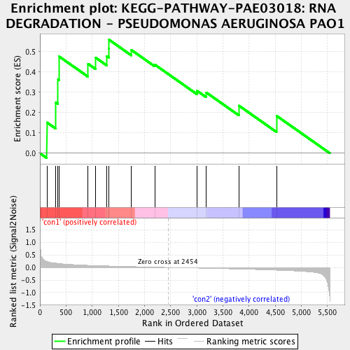
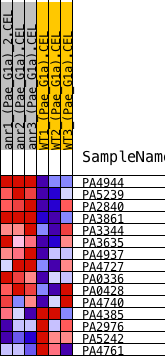
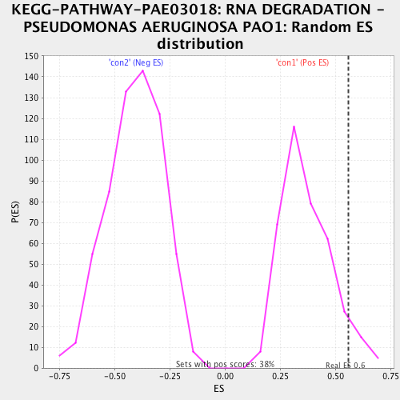

| | | Dataset | Anr_gene.AnrvsWT.cls#con1_versus_con2 |
| Phenotype | AnrvsWT.cls#con1_versus_con2 |
| Upregulated in class | con1 |
| GeneSet | KEGG-PATHWAY-PAE03018: RNA DEGRADATION - PSEUDOMONAS AERUGINOSA PAO1 |
| Enrichment Score (ES) | 0.558423 |
| Normalized Enrichment Score (NES) | 1.5119455 |
| Nominal p-value | 0.062992126 |
| FDR q-value | 0.36653504 |
| FWER p-Value | 0.995 |
Table: GSEA Results Summary

Fig 1: Enrichment plot: KEGG-PATHWAY-PAE03018: RNA DEGRADATION - PSEUDOMONAS AERUGINOSA PAO1
Profile of the Running ES Score & Positions of GeneSet Members on the Rank Ordered List
| PROBE | DESCRIPTION
(from dataset) | GENE SYMBOL | GENE_TITLE | RANK IN GENE LIST | RANK METRIC SCORE | RUNNING ES | CORE ENRICHMENT | | 1 | PA4944 | na | | | 133 | 0.236 | 0.1516 | Yes |
| 2 | PA5239 | na | | | 303 | 0.174 | 0.2506 | Yes |
| 3 | PA2840 | na | | | 346 | 0.162 | 0.3637 | Yes |
| 4 | PA3861 | na | | | 366 | 0.156 | 0.4766 | Yes |
| 5 | PA3344 | na | | | 921 | 0.086 | 0.4404 | Yes |
| 6 | PA3635 | na | | | 1066 | 0.075 | 0.4704 | Yes |
| 7 | PA4937 | na | | | 1276 | 0.062 | 0.4785 | Yes |
| 8 | PA4727 | na | | | 1319 | 0.059 | 0.5150 | Yes |
| 9 | PA0336 | na | | | 1323 | 0.059 | 0.5584 | Yes |
| 10 | PA0428 | na | | | 1749 | 0.036 | 0.5082 | No |
| 11 | PA4740 | na | | | 2196 | 0.012 | 0.4366 | No |
| 12 | PA4385 | na | | | 3007 | -0.023 | 0.3072 | No |
| 13 | PA2976 | na | | | 3180 | -0.032 | 0.2996 | No |
| 14 | PA5242 | na | | | 3808 | -0.064 | 0.2343 | No |
| 15 | PA4761 | na | | | 4527 | -0.107 | 0.1845 | No |
Table: GSEA details [plain text format]

Fig 2: KEGG-PATHWAY-PAE03018: RNA DEGRADATION - PSEUDOMONAS AERUGINOSA PAO1
Blue-Pink O' Gram in the Space of the Analyzed GeneSet

Fig 3: KEGG-PATHWAY-PAE03018: RNA DEGRADATION - PSEUDOMONAS AERUGINOSA PAO1: Random ES distribution
Gene set null distribution of ES for KEGG-PATHWAY-PAE03018: RNA DEGRADATION - PSEUDOMONAS AERUGINOSA PAO1